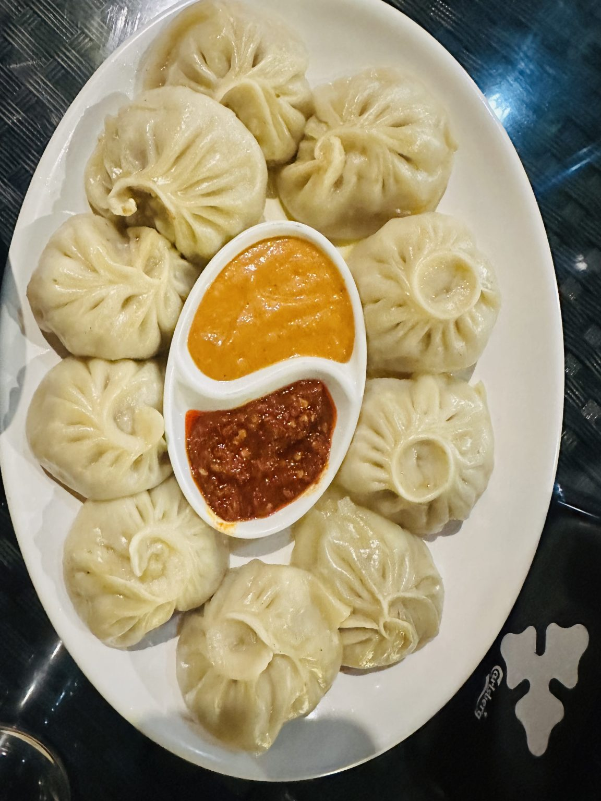

NEPALI MOMO:

Description
Momo , One of the most common street food of Nepal and also one of the most delicious .
Nepal's beloved steamed dumplings filled with spiced meat or vegetables , served with a chutney.
Ingredients
- 2 cups all-purpose flour
- 0.8 cups water(warm)
- 0.5 teaspoons salt
- 400 grams ground chicken or buffalo meat(or mixed veg)
- 2 onions finely chopped
- 4 garlic cloves , minced
- 1 tablespoons fresh ginger, grated
- 0.3 cups fresh cilantro, chopped
- 1 teaspoons cumin powder
- 1 teaspoons coriander powder
- 0.3 teaspoons turmeric powder
- 0.5 teaspoons garam masala
- 1 tablespoons soy sauce
- 1 tablespoons sesame oil
- 1 teaspoons salt and black pepper
- 3 ripe tomatoes
- 3 dried red chilies
- 2 tablespoons sesame seeds, toasted
- 2 garlic cloves (for chutney)
- 1 tablespoons lemon juice
Steps
-
Mix 2 cups all-purpose flour, 0.5 teaspoons salt, and 0.8 cups water (warm) together in a bowl.
Knead for 8-10 minutes until smooth and firm. Cover with a damp cloth and rest.
-
Let the dough rest covered for at least 30 minutes . This makes it easier to roll thin without tearing.
-
While the dough is resting , In a large bowl, combine 400 grams ground chicken or buffalo meat (or mixed veg), 2 onion, finely chopped, 4
garlic cloves, minced, 1 tablespoons fresh ginger, grated, 0.3 cups fresh cilantro, chopped, 1 teaspoons cumin powder, 1 teaspoons coriander
powder, 0.3 teaspoons turmeric powder, 0.5 teaspoons garam masala, 1 tablespoons soy sauce, 1 tablespoons sesame oil, and 1 teaspoons salt
and black pepper. Mix well until all ingredients are evenly distributed. Refrigerate while you roll the wrappers.
-
Divide the dough into small balls (about 10-12g each). On a lightly floured surface,
roll each ball into a thin circle about 8-9 cm in diameter. The edges should be slightly thinner than the center.
-
Place a heaped teaspoon of filling in the center of each wrapper.
Fold and pleat the edges together, pinching firmly to seal. The classic Nepali style uses 10-12 pleats gathered into a central knot at the top.
-
Lightly oil the steamer basket and arrange momos without touching each other.
Steam over boiling water until the wrappers are translucent and the filling is cooked through.
-
To make the chutney , Roast 3 ripe tomatoes and 3 dried red chilies in a dry pan until charred on the outside.
Blend together with 2 tablespoons sesame seeds, toasted, 2 garlic cloves (for chutney), 1 tablespoons lemon juice, and salt to taste until smooth.
Adjust heat and seasoning as desired.
-
Serve the hot momos immediately with the tomato-sesame chutney on the side. Enjoy with a cup of hot butter tea for the full Nepali experience!
Enjoy making Momos!
Home